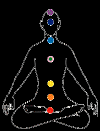
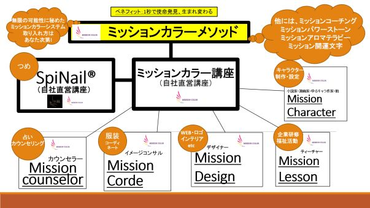
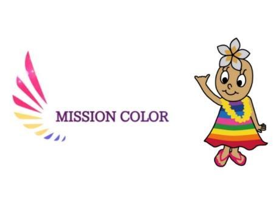

| あなたの使命は1秒で確認できる！: ～真実の成幸システムとは？～ (Aina ブックス) | |
| Aina Unno | |
| UNKNOWN (2019) | |
●祖母と曾祖母が占い師
●ハワイ島で修業後、心身を癒す独自のセッション ALOHAセラピーを創始 ●2008年ヒーリングサロン開業、翌年日本 ALOHAヒーリング協会設立 ●2011年老人福祉施設や家事代行会社・リゾート施設向けサロン様などへの施術講師 ●パーソナルブランドコンサルティングや店舗等のコーディネーターとしても数々の講演 やコラムの執筆、セミナー・講演会でも活躍
●2014年ハワイ島に特化したハワイアン料理店、ビッグアイランドカフェを池袋にオープ ン
●2018年使命を色で確認するミッションカラーシステムを開発。ネイルに落とし込んだス ピネイル®講座を世に拡める。
●
ミッションカラー（商標登録出願中）http://ur0.work/OgtD
●スピネイル®http://www.facebook.com/JapanSpinailAssociation/
スピネイル一般向け紹介用事前登録フォーム
こちらのフォームに事前登録してください。
※予約サイトでは、備考欄に必ず「Ainaからの紹介」とご記入ください。http://urx.space/NGzo
●Big Island Café(池袋)http://www.bigislandcafe.jp/
●Facebook：日本語版 Aina Unno / 英語版 Aina Uno
●LINE：Aina
●Instagram：Aina creation
●Twitter:：Aina Uno
Contents Introduction Chapter1:運命はなぜ色で左右されてしまうのか？
Chapter2：あなたにとって波動の高い色を選ぶには？ Chapter3:ミッションカラーは人生を彩る InformationAloha ！こんにちは！ミッションカラー開発者の Ainaです。
表紙のインパクト有り過ぎて、ちょっと怖いですよね。
驚かせてしまったかもしれません。けれど、本当に"一瞬で使命が確認できる ミッ ションカラー"の開発に成功したので、そのままをタイトルにさせていただきました。
この本は『ミッションカラー』のテキストの一部をアレンジしたものです。 本格的にいや、本氣で自分の人生を好転させたい人のための攻略本として、皆様の人 生に何か生きづまりを感じたとき、迷われたときに思い出して欲しい人生のバロメー ター本としてご活用して頂きたい本です。
わたしは、祖母と曾祖母が占い師で、親指が 90度に曲がり、霊能者レベルの直観力が あるといわれる仏顔相が両親指の第一関節にあることだけを確信材料として、ヒーリ ング・カウンセリング事業を 15年もの間やってきました。しかし、本当にこの仕事は 自分に合っているのか？と疑問に思うことも正直多々ありました。なぜなら、以前の わたしは、ファッションや美容など物質的な世界に生きていたから、家族にも人々の 心身を癒すお仕事は合ってないんじゃないかと、よく言われていました。
ですが、ミッションカラーで自分の使命を確認できたときの感動は、一生忘れられま せん! 15年やってきて「これで良かったのだ！」と涙が溢れました。 ミッションカラーで使命を確認し、確定できてからは、誰の意見にも左右されません し、むしろ、ワクワクしながら邁進できます。どんな苦労も苦労と感じず、困難さえ もありがたい氣づきと捉えて、さらに大きく前進することができたのです！
さて、 2019年は『 社会が激変する年 』といわれているのは聞いたことがあります か？ 社会の激変とは、今まで「本物」だと信じていたものが、実は実態が何もない 「ニセモノ」だったことが顕在化します。そう、実態を把握できるか否かに尽きます。 占星術はもちろんのこと経済学者までもが、それを豪語しています。
皆さんも何となく感じていませんか？「最近、なんか世の中がおかしい...」 「信じていたことが、ウソ臭く見えてきた...」そんな、氣持ちの悪い"違和感"を。 そんな混沌とした２０１９年を私たちはどう生きればいいか。
『真実を観る目』を養うことです。そして、まずはあなた自身が魂の本質『あなたら しさ（カラー）』を見出すことです。
真実を観る努力、ここを真剣に取り組まない人は何を
やっても人生がうまくいきません。だって、根幹から
ブレてるわけですから。
あなたの本質からあふれ出す想い・言動・行動に勝る
ものは他に無いのです。
だって、あなたの人生はあなただけのものですから。
かりの情報社会です。ですから、例えば、偉い人や有名な人の言葉を借りて伝えても、 心に響かないのです。みんなと同じような商品やサービスを売ったとしても価格競争 に苛まれてしまいます。(著書『最新・ミッション・マーケティングのすゝめ』を参考 にしてください。) けれども、もし、あなたのビジネスがレッドオーシャン（同業過 多のため価格競争が多発した業態）だとしても、あなた自身の魂からあふれ出すレベ ルが本氣であれば皆が買いたくなるはずです。本氣であるためにはまずあなた自身が "あなたが誰"なのかをハッキリさせることです。
なぜなら、まさに今・現在は時代の転換期です。真実こそが生き残る時代。 活動をするにあたっての要となる、あなたのゆるぎない"使命"を早々に捉えてビジ ネス（ライフワーク）に活かさないと時代に取り残されてしまいます。
処女作【究極のミッションの見つけ方】は 1週間で 8か国語の本を出版し（だれもや ってないことに挑戦）、お陰様で世界中のたくさんの方々から感謝の声をいただきま した！
通常の本は 200～250ページというとても長い文章ですが、私の本は、要点だけを簡潔 にまとめています。なぜなら、情報社会ですから、すべての情報はネット検索で即解 決します。枝葉の重要性のない説明はみんな知っているので要りませんのでね。
本書【あなたの使命は一瞬で確認できる！】はとても短いので、時間を無駄にさせま せん。ですから読み終わったあとは、即行動に移すことができます。 超本物思考の世の中へ邁進していただくべく、この本を読んでいただき『自分のカラ ー（本当のあなた）』について、向き合ってみていただければと思います。
この本には、わたしが今までハワイ島に行ったときに撮った（又は生徒さんが撮って くれた）最高の波動を感じる写真を載せましたので壮大すぎる大地のエネルギーを感 じていただけると幸いです。
平和で満たされすぎている日本の現在、けれども、まだまだ世の中にない、拡がった ら皆が幸せになる！という新しい物・事がたくさんあります！
ぜひ、あなたの魂の特徴を見出して、理想の人生をクリエイトしていってください。
まずは視界の仕組みからお伝えします。結論から言いますと、実は色彩は脳が勝手に 反応したもの。すなわち、色は錯覚にすぎません。何を言っているんですか？Aina さ ん！と思われた方が多いと思いますが、実はわたしたちが観ている世界は脳の中で処 理するのに 0.2 秒かかっているそうです。例えば、眩しい光を見た時に白い壁などを 見ると黒い影が残る時がありますよね。これは、脳を通して認識するスピードより光 の方が速いためにこうした現象が起こるのです。では、0.2秒のタイムラグの間に脳で はどんな現象が起きているのでしょうか？実は脳では「見たいように見たい」という 思考から一種の現実加工が行われているのです。
では、実際に実験してみましょう。カラーとモノトーンの同じ図柄の画像を用意しま す。その 2 枚をカラー・モノトーンの順に 2 枚合わせます。まず、カラーの画像を 20 秒ほど見ます。その後、カラーの画像をパッとはずし、同じ画像のモノトーン画像を 見ます。するとどうなるか、モノトーンのはずの画像に一瞬だけ色が載っているので す！
わたしがこの実験をした時に非常にびっくりしましたが、それと同時に、小学生の時 に猫の研究の論文を書いたのを思い出しました。そう、猫は赤系の色が見えません。 他の動物でも淡い色で見えたり、モノトーンの世界で生きている動物もいます。この 実験が成立するということは、この世には物理的に色彩というものが存在しないとい う証明されることになるのだそうです。物理学では色彩は存在しませんが、電磁波は 存在します。ですから、光の長短、周波数は計測できます。光は存在しても、色彩は 存在しない。要するに、色彩の実態は人間の脳が作り出している影と光の相対的な差 なのだということです。
赤も、青も実は存在しない。それは単なる周波数であり、人類はそれを脳の中で変換 し、「色」として共通の概念をもっているということです。だとすると、人はどの色 に共鳴するかどうかで心の状態も変わっていきます。ですから、自分のこころを整え るためにも意図して活用することができます。それが、色彩心理学です。
色（カラー）というものが、私たちの心理状態へ与える印象（イメージ効果）という ように考えたことはあるでしょうか？おそらくほとんどの人が、色を「ただの色」と して認識しているかと思います。
色は、目で見える「波長」のことだということをご存知の方は少ないと思います。
「波長」とは「波の長さ」のことです。「波長」を持つ
ものとして、音波や電波、光などがあります。人間に対
して使う場合の「波長」は、「ものの考え方や感じ方」
を表しますが、「波長が合う」とは「相性がいい」とか
「共鳴する」ということです。
す。「色=エネルギー」であり、その「色」が持つエネルギーは人にも大きく影響を与 えています。つまり、自分に合った「色」を身に付ける事で「氣」の流れが良くなる。 という事です。
人は視覚からの影響が 97％だと言われていますので、無意識的に色（カラー）の影響 を多分に受けているのです。普段なにげなく見ている色でも、そこには人の心理や神 経に影響するメッセージが込められているのです。
偉人・アインシュタインは「E=ｍｃ２」と数式であらわしています。これは「この世 の万物はエネルギーである」ということです。E とはエネルギー、ｍとは「物質」、 ｃとは「光」、２とは「２乗」なので「エネルギー=物質×光の速度の 2 乗」という意 味です。ですから、私たち人間を含め、宇宙のすべてのものはエネルギーによって振 動しているのです。エネルギーである周波数は人間に影響を与えることが解っていま す。なぜなら、人の身体は約 70％が水分でできていて、周波数は水分を振動させるか らです。そして、周波数は人間の体だけでなく脳にも良くも悪くも大きく影響を与え ています。
だから、周波数の合う服を着て、周波数の合う人達と付き合い、周波数の合う環境に 身を置かないと心身共に健康でいられないのです。
私たちは視覚の影響が 97％ですから、無意識に見て無意識に脳に影響を与えてしまう 色を自分の理想の周波数に固定することで、当然、人生さえも大きく影響を与えま す。
私たちは一人ひとりがもつ 周波数が自分自身の現実世界を決めていると言っても 過言ではありません。
自分自身の周波数を理解するということは、本質の自分を知るということに繋がりま す。
だから、今どんな色を欲しているか、どんな色が苦手なのか、自分の氣分・エネルギ ーと向かい合い、意図して取り入れることがなりたい自分になれる最短の方法なので す。
「波動が高い」とは単なるエネルギッシュとは違う、質も兼ね備えたエネルギー値で す。「魂の波動」といえば、その魂に宿るエネルギーの値ですが、それは「パワーと 質」の両方を兼ね備えた値を言っているのが一般的ですね。パワフルなだけなら、人 に迷惑をかけてもガンガンやりたいことをやり抜くような人もいて、それはエネルギ ーがあるわけですが、そのような人を「魂の波動が高い人」とは誰も言いませんよね。 パワフルでなおかつクオリティも高いことで「波動が高い」という形容になりますね。 では、あなたにとって波動の高い色とは、どういうものか...
そもそも、色に波動の高い低いはあるか？
ですが、色そのものは、紫色は 380ナノメータ
ーから赤色で 780ナノメーターの範囲の見える
電磁波というのが科学的な見地での実態です
から、この値の中で良い悪いはありません。
ちなみに赤の延長線上に赤外線（0・7～1,000
マイクロメートル）がありますが、熱量があ
り温かいのです。巣鴨のおばちゃんが赤いパ
ンツを履いているのは、科学的にも理に適っているのです。逆に冬に青い服やペディ キュアを付けると寒々しくみえるどころか、身体が冷えてしまいますので注意すると いいです。話は戻りますが、自分にとって抵抗が少なく波動の合う色が今の魂に似合 う色となります。
ここで、ひとつ勘違いしていただきたくないのが"わたしの似合う色は「赤」です！" のようにただ何色が似合うか？ではなく、どんな赤なのか？というところが一番大切 なところです。ひとつ「赤」と言ってもいろいろな波動の赤があります。淡いパステ ル調の赤もあれば、オレンジの混じった朱赤、ワインレッドや、赤紫色など様々です。 どんな波長・どんな発色の赤が似合うかを自分の今の氣持ち、波動と向き合ってチョ 私達は生き物ですから、自分自身にも体質や思い込みなどの癖などがあります。 人間関係を色に例えると分かりやすいのですが、その波動に寄り添える電磁波（波動） なのか、なじみが悪い波動なのかを瞬時のうちに区別しているのです。
けれど、自分自身が疲れていてエネルギー消耗してしまったりすると、選ぶべき物事 を『自分基準』で選定できず、だれかの"お眼鏡"で選んでしまい、結果的に軸がブ レてしまいます。
だから、大切なのは、心になじみの良い色を日々選び続けることです。 自分の魂と合う色を選び続けるということは、心の負荷を減らして自分らしく生きる ということです。
それは、合成保存料のない食品を食べないようにして身体に毒素を貯めないように氣 をつけることと似ています。
その意味で似合う色を身につけるということは、自分らしく輝かせてくれて、なおか つ、他人から観て違和感がなくなじみが良いという「見た目」にも良い影響を与えて くれて、波動が高くなり、その結果"素敵な人"だと思われるのです。
さらに、思い切ってモチベーションを上げ、魂の意識を高くして、その波動にあった 色を用いれば人はその理想の波動の色に同調して、氣持ちだけでなく、生き方さえも 変わっていきます。
理由は、先ほどもお伝えしたとおり、人は 70％水分でできているので周波数の固まっ た色にどうしても影響を受けてしまうからです。
自分を受け止め切っていくと、必ず波動は上がる方向へいきます。
自分の似合う色を受け入れていく過程は、自分の善し悪しを受け入れていくことと結 果的には同じです。好きでもなかったけど、波動が合う色を着ることで好きになり、 それまで着ていた色が、自分の心のどの部分を担っていたのかも何となく見えてくる はずです。
「私は◯色にこんな想い（恐れ・不安感）を込めていたん
だ！」というのが見えてくれば、それを手放す状態になれたと
いう自然浄化が促された証でもあります。この状態が得られる
「自分らしくていいんだ...」 あなたの心は、そうつぶやきは
と、あなたの波動は上昇を始めます。
じめてくるはずです。「自分が好き」その域まで達すれば、
あなたは真我（本能・魂・超意識）と見た目が統一され、
オーラが出てカリスマ性が増していきます。
けれど、必ず来るのがステップアップである最初の壁「好転反応」です。 そう、自分が大事に抱えていた毒（思い込み）を手放すために、一度発熱するような 状態と言いますか、自分でも氣づかない膨大過ぎるネガティブな呪縛に自分が別れを 告げるための反応がおこります。コンフォートゾーン（居心地の良い領域）から抜け 出して行くには、魂のステップアップが必要です。
例えば、パーソナルカラーアドバイザーから似合うとされる色を言われても、それが 抵抗感の色だったらどうでしょう、あなたの心は一氣に否定的になりますよね。 大抵の人は『あのパーソナルカラーアドバイザー分かってないな！』と思うでしょう。 なぜなら、人は個人差がありますが、到底は自分で選択した物事にしか重要性を持た ないからです。要するに、それは他人のフィルターであって、あなたのフィルターで はないので、抵抗感を得てしまうのです。
わたし自身も長年の間、カウンセラーとして人の心に触れてきましたが、やはりどん なにわたしが超意識や洞察力を使ってアドバイスしても、行動するのは本人次第です し、逆にわたしの意見に依存や責任転換しても、本心からの答え合わせが一致しない 限り、チグハグな状態なままで、双方共に幸せな方向にはいきません。
もし、あなたがあなた自身のブランディングに苦しんでいるなら、色で人生を彩る術 があります。自分で魂の色を瞬時に確認できる『ミッションカラー』システムの開発 をしました。ミッションカラーは他人の意見に振り回されずに自分で自分らしさを見 出せます。占いやパーソナルアドバイザーなどの補助輪を取り外し、他人軸ではなく、 自分の根源に目を向け"自己回帰"して本質のあなたを自らの感性で見出すことが最 良の方法だと思いそれをシステムにしたかったのです。なぜなら、あなたの源は、他 人であるわたしがアドバイスはしてはいけない聖なる領域にあるからです。 この世の生物はみな大切な意味があって生まれてきています。神様に与えられた命、 人は聖なる小宇宙であり尊い存在です。だから、その人がそ
の人らしく在ることが成幸への一本道なのです。けれどなか
なか自分らしさを見出すことができない。だから、ミッショ
ンカラーを取り入れることで、ゆるぎない自信と確信力が培
い、さらに、望む人生を先取りすることができます。
実は私は幼少期から母に「人生は思い通りにならないもの
よ！」という暗示をかけられてきました。それは、私の幼児
期からの定義となっていました。
社の経理を担当し、父に尽くした人生でした。父の前では、良き妻を演じますが、わ たしの前では不平不満ばかり、自分の人生を見出すことが罪だというように、母はわ たしに「銀行員になりなさい。」と言っていました。事務作業が大の苦手なのにも関 わらずわたしの"カラー"に見向きもせずに。そんな反動のおかげで、自分の"カラ ー"を追及し、母とは真逆の「人生は想い通りにしかならない！」という定義に塗り 替えることができたのです。
『ミッションカラー』を開発できた今では、母に感謝しかありません。 今では、私は誰に会っても「エネルギッシュな人」と言われます。だって、昔は母の ようにやりたいことをやってはいけないと抑え込んでいた自分がいましたから人生が 180 度変わり自分らしく伸び伸びと生きることができました。あなたも 180 度好転でき ます。自分にとっての「波動の高い色」を生活に用いるだけで。
では、色と私たちの身体はどのような関係があるか、エネルギー解剖学・エネルギー体な どの重要性に触れてみましょう。
（●は知識的な部分なので必要のない方は読み飛ばしてください。）
●エネルギー解剖学
私たちと同様に、植物や動物そして鉱物や地球自体もエレクトロマグネティック(電磁 的)フィールドを持っています。私たちは皆、肉体と心と魂(氣、霊的なもの)を持ち、 各々のバランスがとれてはじめて健康でいられます。日本では会話の中に多く"氣" という言葉が出てきます。"氣がつく""氣がまわる""氣をもむ""氣が抜ける" など無数です。これは私たちが"氣持ち"と"エネルギー"を一緒に考慮してきたか らです。エネルギーワークを行う際は、何に働きかけているかを意図すること、集中 力が重要です。
●オーラと７つのエネルギー体
オーラとは、電磁気的なエネルギーフィールドで、身体、思考、心、経験、過去生、 トラウマの状態を表しています。エネルギーボディーとフィジカルボディー(肉体)は お互い密接に影響しあっています。オーラには７つの層があり、一番内側が最も密度 が高く、外側の層にいく程低くなります。オーラの状態
は何を私たちが考え、感じ、経験するかで常に変化しま
す。エネルギーボディーは肉体の状態を正確に写しとっ
ています。また、エネルギーボディーに何かが起こった
ら、肉体もそれに従って同じように影響を受けます。
外側からのネガティブなエネルギーは、まず外側の
オーラの層を害し、ネガティブな考えはもっとも内側
の層から影響を与えます。
理想的なオーラの形は卵型です。身体から数メートルブラックサンドビーチ（ハワイ島） としても働き、過去や現在、未来の個人情報を記録しています。
もし、エネルギーにブロックがあり、オーラに穴が開いていたら、その人は消耗し、 ネガティブなエネルギーの影響を受けます。
肉体の外側に７つのエネルギー体が存在します。エネルギー体はそれぞれ外観も違い ますし、１つひとつが独自の役割を持っています。各々の周囲を電磁放射であるオー ラが取り囲んでおり、そこから感情や精神の健康状態などの情報が得られます。練習 すれば、人間のオーラを"読み"とって、相手がどんな状態(精神または肉体的)にあ るかを知ることができます。
●チャクラ
チャクラとは"輪"を意味するサンスクリット語です。身体に点在し、回転している 潜在的エネルギーセンターです。身体には８万８千ものチャクラが存在するといわれ ており、中でも主要なチャクラは次の 1～７のようにセンターラインに沿って７つあ り下から数えます。このように、私たちの肉体とエネルギーは色のもつエネルギーとリン ク
し、それを感じることができるのです。
カラー ヒーリング効果
赤 熱と活力、生存への意欲。欲望・エネルギー情熱。成功に繋がる才能。
第１ 物理的な物事に対処する技能。地に足がついている。効率的。第一ギ
チャクラ
緑 生命・成長・自然界の関係。自分の在り方を見直す。発展・拡大のパワ
第４ ーがベース。人を愛し、思いやる気持ち。自由をよりポジティブに体験す
ピンク 個人の安全性をサポートする。リラックスさせ、自分の在り方を受け入れ
第４ る。いたわりと優しさ。ヒーリングの色。恐怖と苦悩の感情を癒す。マゼン
チャクラ タ：自己信頼と自己主張の改善。
色と私たちの身体そして、精神は深い関係にあることが分かったと思います。 ミッションカラーの研究では、それを踏まえた上で人々は何のために生まれてきたのか、 魂とは何かを追及しました。
人は生まれて来る前に「自分自身を知る」という課題をすべての魂が持って生まれてきた といわれています。この世に生まれて来る前の私たちはみんな、霊界でこれまでの自分の 魂の歴史、 氣質、すべてチェックし、把握した上 で生まれて来たといわれています。 『ミッション カラー』は人のエネルギー・生命学・色彩心理学 を取り入れた、最新の成 幸哲学システムと言って も過言ではないでしょう。 アプリケーション版であるミッショ ンカラーシステムに生年月日を入力すると、いくつかの色が表示されます。それを、クラ イアントの方に私の名前を言わずに見せたところ、このような返事をいただきました。
『チャレンジ精神旺盛で不可能を知らず、理論よりも感性で動く人。情熱的で真実を追求 し、子供のようにシンプルに興味のあるものだけをクリエイトする人。また、直観が鋭い ので、人々の精神性を啓発し、高めていくこと。ビジネスのような物質的な世界に参入し、 なんらかの形で精神的な啓蒙者の働きをします。無我夢中で一つの事に集中する力が強く なり一心不乱にやり遂げる職人氣質な人で、素晴らしいアイデアも発揮し、霊的世界と物 質世界との橋渡しの役割を担います。強い影響力を放つ力を持っています。また、病み疲 れた人の心身を癒す人です。さらなる次元に向かうアドバイスをするならば、ピュアなハ ートのままに自由に発想したことを楽しく創っていくことで皆が幸せになれます。使命は、 感じたものを具現化して氣づきを与える人です。』
いくつかの色の名前が表示されているのを見ただけで、こんなに深く鑑定できるのは、驚 きですよね。
ミッションカラーシステムを用いれば、いかようにも自由に
『真に望む高次の自分』を彩ることができます。
右の写真は、ミッションカラーを用いたスピネイル ®の写真で
す。ミッションカラーシステムの要素を、今の氣分に合わせて自
由な発想で使用すれば、そのときどきで多種多様にアレンジでき
ます。
ミッションカラーをネイルに取り入れた「スピネイル®」は願い
が叶い幸運を呼び寄せると、口コミやリピーターが絶えず、多く
の方からお喜びの声をいただいています。
仕事の依頼が来すぎて断っているくらいだとか、臨時収入が入っ
たり、恋人ができたり！と監修したわたし自身がびっくりするく
らいです。
（スピネイル®の詳細は本の最後に添付してありますURLをご覧
ください。）
ミッションカラーはネイルだけでなく、占いやコーチング・カウンセリングなどのメンタ ルビジネス、パワーストーンやアロマテラピー・開運文字・イメージコンサルタント・デ ザイナー・企業研修や福祉活動など様々なビジネスでご利用いただけます。 まだ公表してたった 2か月のミッションカラーですが、お陰様で受講者の皆様にはたくさ んの感謝の声を頂いております。
ミッションカラーを開発して、痛感することは、
人は生まれたタイミングから人生のお役目が決まっている
決められた人生のお役目をどう軌道修正し、どう切り開いていくかは自分次第 なのだと深く感じさせられます。
自分の"ミッションカラー"を知ることは人生のターニングポイントとなるといっても過 言ではないでしょう。
ミッションカラーで人生を自由に彩ることは成幸の一本道です。
でも、なぜわたしにこんな深い研究ができたのか、不思議に思いませんか？ ミッションカラー・スピネイル®はまさに、約 1年間本氣で人々の魂と向き合い毎日真剣 に研究した賜物です。普通はこんな研究できないよ！と思われるほど深く理に適ったロジ ックを追及し、試行錯誤を繰り返した結果、人々の魂と色を一致することができたのです。 お陰様で、たくさんの方々に感謝されております。
では、研究できた根本の理由を初めて公の場で明かします。
とてもプライベートなことでお恥ずかしいのですが、あえてこの場でお伝えさせていただ きたいと思います。
実は昨年のはじめ、高齢での体外受精を経験しました。2度目でした。体外受精を決意し た理由は末期ガンで苦しんでいる母に赤ちゃんを見せたかったから。安心させたかったか らです。
両手・両足が育ちはじめ、すくすくと成長していると感じはじめた頃、検診のために産婦 人科に行くと、なんと！「残念ですが、心臓が動いていません。」とお医者さんに言われ ました。今度は無事に育ってくれると思っていた矢先だったので、さすがに心身共にボロ ボロになり、悲しみで毎日泣き暮れて、身体はカチカチに硬直してしまっていました。 ホスピスにいる母に会いに行かなきゃと思っていたのですが、辛そうな姿を見せたくなか ったので、なかなか会いに行く氣持ちになれませんでした。ようやく会いに行く余裕がで き、一か月半ぶりにお母さんに会えるからと、大好きなクッキーを用意しました。いよい よ明日はお母さんに会いに行く日です。わくわくして明日の準備をしていた時、一本の電 話が！父からでした。
「お母さん亡くなったよ。」と。
わたしは数か月の間、生きているのか死んでいるのかわからない状態になりました。 早く会いに行けばよかった！！と後悔するあまり、氣が狂いそうになりました。 赤ちゃんも失い、母の最期にも会えなかったわたし、もう失うものはありません。 母に会いたかったのに 1か月半も会いに行けなかったことを、友達のせいにし、夫のせい にし、自分のせいにし、死んでしまいたくなりました。
そこでわたしは、悲しみに明け暮れる自分が嫌で、無我夢中で人々が生まれた意味を追求 するべくミッションカラーを開発したのです。
最期まで読んでいただきありがとうございます。 皆さまが皆さまらしく『生まれて来た本当の意味』を見出し 人生があなた色で輝きますように。
ミッションカラー開発者 Aina Mission● スピネイル®http://www.facebook.com/JapanSpinailAssociation/
スピネイル一般向け紹介用事前登録フォーム
こちらのフォームに事前登録してください。
※予約サイトでは、備考欄に必ず「Ainaからの紹介」とご記入ください。http://urx.space/NGzo
●Big Island Café( 池袋)
●Facebook：日本語版
●LINE：Aina